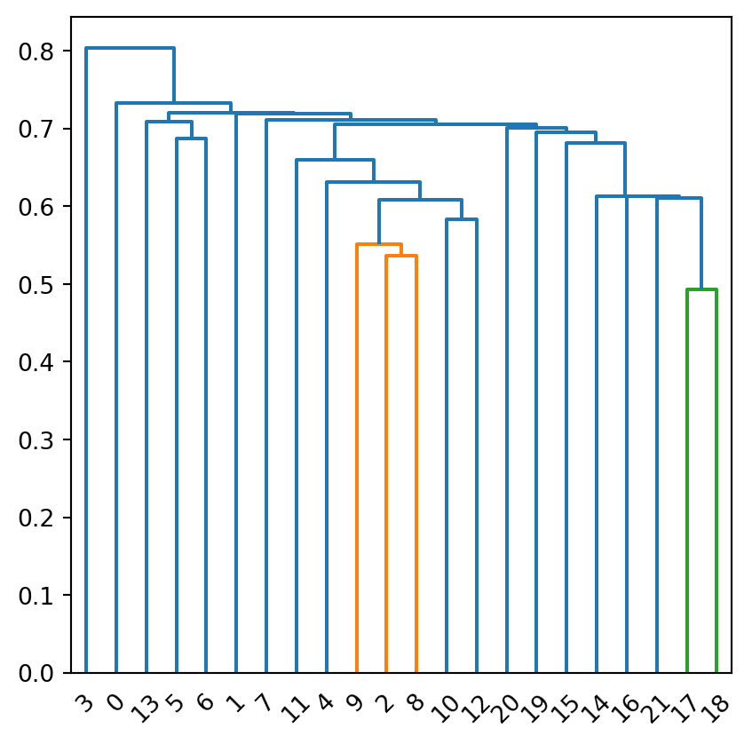

import re
from collections import Counter
import pandas as pd
import numpy as np
from sklearn.feature_extraction.text import TfidfVectorizer
from scipy.cluster.hierarchy import dendrogram, linkage
from matplotlib import pyplot as plt
from scipy.spatial.distance import cosine1. Document Clustering Introduction:
Clustering is a fundamental technique in machine learning that involves grouping data with close and similar properties/patterns together. This blog specifically focuses on document clustering and makes an analysis of finding the sentences with closest and highest similarities. There are a couple of steps to achieve this in the later sections: 1. data clean and initialization 2. compute the cosine distance 3. find the closest cluster 4. merge 5. visualization
2. Import the libraries:
3. Open the document file:
Below is the code to open the “words.txt” file and each line is an element in the sentences list.
with open('words.txt', 'r') as file:
sentences = file.readlines()
sentences['In comparison to dogs, cats have not undergone major changes during the domestication process.\n',
'As cat simply catenates streams of bytes, it can be also used to concatenate binary files, where it will just concatenate sequence of bytes.\n',
'A common interactive use of cat for a single file is to output the content of a file to standard output.\n',
'Cats can hear sounds too faint or too high in frequency for human ears, such as those made by mice and other small animals.\n',
'In one, people deliberately tamed cats in a process of artificial selection, as they were useful predators of vermin.\n',
'The domesticated cat and its closest wild ancestor are both diploid organisms that possess 38 chromosomes and roughly 20,000 genes.\n',
'Domestic cats are similar in size to the other members of the genus Felis, typically weighing between 4 and 5 kg (8.8 and 11.0 lb).\n',
'However, if the output is piped or redirected, cat is unnecessary.\n',
'cat with one named file is safer where human error is a concern - one wrong use of the default redirection symbol ">" instead of "<" (often adjacent on keyboards) may permanently delete the file you were just needing to read.\n',
'In terms of legibility, a sequence of commands starting with cat and connected by pipes has a clear left-to-right flow of information.\n',
'Cat command is one of the basic commands that you learned when you started in the Unix / Linux world.\n',
'Using cat command, the lines received from stdin can be redirected to a new file using redirection symbols.\n',
'When you type simply cat command without any arguments, it just receives the stdin content and displays it in the stdout.\n',
'Leopard was released on October 26, 2007 as the successor of Tiger (version 10.4), and is available in two editions.\n',
'According to Apple, Leopard contains over 300 changes and enhancements over its predecessor, Mac OS X Tiger.\n',
'As of Mid 2010, some Apple computers have firmware factory installed which will no longer allow installation of Mac OS X Leopard.\n',
'Since Apple moved to using Intel processors in their computers, the OSx86 community has developed and now also allows Mac OS X Tiger and later releases to be installed on non-Apple x86-based computers.\n',
"OS X Mountain Lion was released on July 25, 2012 for purchase and download through Apple's Mac App Store, as part of a switch to releasing OS X versions online and every year.\n",
'Apple has released a small patch for the three most recent versions of Safari running on OS X Yosemite, Mavericks, and Mountain Lion.\n',
'The Mountain Lion release marks the second time Apple has offered an incremental upgrade, rather than releasing a new cat entirely.\n',
"Mac OS X Mountain Lion installs in place, so you won't need to create a separate disk or run the installation off an external drive.\n",
"The fifth major update to Mac OS X, Leopard, contains such a mountain of features - more than 300 by Apple's count.\n"]4. Tokenization and Data Clean:
For each sentence in the document, it first converts the sentence to lowercase, tokenize the sentence, and removes the empty words. The tokenized_sentences contains a list of cleaned words. Also, the unique_words contains all unique words found across the sentences in the document.
unique_words = set()
tokenized_sentences = []
for sentence in sentences:
sentence = sentence.lower()
words = re.split('[^a-z]', sentence)
words = [word for word in words if word]
tokenized_sentences.append(words)
unique_words.update(words)
len(tokenized_sentences)225. Dataframe setup:
The dataframe is structured to represent the frequency count of each unique word across sentences. Its columns correspond to the unique words, and each row corresponds to a sentence. The dataframe serves as the representation of the frequency distribution of words in the document.
sentences_df = pd.DataFrame(index=range(len(tokenized_sentences)), columns=list(unique_words))
sentences_df.fillna(0, inplace=True)
for idx, sentence in enumerate(tokenized_sentences):
for word in sentence:
sentences_df.loc[idx, word] += 1
sentences_df| its | as | incremental | their | won | use | small | chromosomes | arguments | october | ... | mice | will | dogs | adjacent | wild | major | releases | were | unix | output | |
|---|---|---|---|---|---|---|---|---|---|---|---|---|---|---|---|---|---|---|---|---|---|
| 0 | 0 | 0 | 0 | 0 | 0 | 0 | 0 | 0 | 0 | 0 | ... | 0 | 0 | 1 | 0 | 0 | 1 | 0 | 0 | 0 | 0 |
| 1 | 0 | 1 | 0 | 0 | 0 | 0 | 0 | 0 | 0 | 0 | ... | 0 | 1 | 0 | 0 | 0 | 0 | 0 | 0 | 0 | 0 |
| 2 | 0 | 0 | 0 | 0 | 0 | 1 | 0 | 0 | 0 | 0 | ... | 0 | 0 | 0 | 0 | 0 | 0 | 0 | 0 | 0 | 2 |
| 3 | 0 | 1 | 0 | 0 | 0 | 0 | 1 | 0 | 0 | 0 | ... | 1 | 0 | 0 | 0 | 0 | 0 | 0 | 0 | 0 | 0 |
| 4 | 0 | 1 | 0 | 0 | 0 | 0 | 0 | 0 | 0 | 0 | ... | 0 | 0 | 0 | 0 | 0 | 0 | 0 | 1 | 0 | 0 |
| 5 | 1 | 0 | 0 | 0 | 0 | 0 | 0 | 1 | 0 | 0 | ... | 0 | 0 | 0 | 0 | 1 | 0 | 0 | 0 | 0 | 0 |
| 6 | 0 | 0 | 0 | 0 | 0 | 0 | 0 | 0 | 0 | 0 | ... | 0 | 0 | 0 | 0 | 0 | 0 | 0 | 0 | 0 | 0 |
| 7 | 0 | 0 | 0 | 0 | 0 | 0 | 0 | 0 | 0 | 0 | ... | 0 | 0 | 0 | 0 | 0 | 0 | 0 | 0 | 0 | 1 |
| 8 | 0 | 0 | 0 | 0 | 0 | 1 | 0 | 0 | 0 | 0 | ... | 0 | 0 | 0 | 1 | 0 | 0 | 0 | 1 | 0 | 0 |
| 9 | 0 | 0 | 0 | 0 | 0 | 0 | 0 | 0 | 0 | 0 | ... | 0 | 0 | 0 | 0 | 0 | 0 | 0 | 0 | 0 | 0 |
| 10 | 0 | 0 | 0 | 0 | 0 | 0 | 0 | 0 | 0 | 0 | ... | 0 | 0 | 0 | 0 | 0 | 0 | 0 | 0 | 1 | 0 |
| 11 | 0 | 0 | 0 | 0 | 0 | 0 | 0 | 0 | 0 | 0 | ... | 0 | 0 | 0 | 0 | 0 | 0 | 0 | 0 | 0 | 0 |
| 12 | 0 | 0 | 0 | 0 | 0 | 0 | 0 | 0 | 1 | 0 | ... | 0 | 0 | 0 | 0 | 0 | 0 | 0 | 0 | 0 | 0 |
| 13 | 0 | 1 | 0 | 0 | 0 | 0 | 0 | 0 | 0 | 1 | ... | 0 | 0 | 0 | 0 | 0 | 0 | 0 | 0 | 0 | 0 |
| 14 | 1 | 0 | 0 | 0 | 0 | 0 | 0 | 0 | 0 | 0 | ... | 0 | 0 | 0 | 0 | 0 | 0 | 0 | 0 | 0 | 0 |
| 15 | 0 | 1 | 0 | 0 | 0 | 0 | 0 | 0 | 0 | 0 | ... | 0 | 1 | 0 | 0 | 0 | 0 | 0 | 0 | 0 | 0 |
| 16 | 0 | 0 | 0 | 1 | 0 | 0 | 0 | 0 | 0 | 0 | ... | 0 | 0 | 0 | 0 | 0 | 0 | 1 | 0 | 0 | 0 |
| 17 | 0 | 1 | 0 | 0 | 0 | 0 | 0 | 0 | 0 | 0 | ... | 0 | 0 | 0 | 0 | 0 | 0 | 0 | 0 | 0 | 0 |
| 18 | 0 | 0 | 0 | 0 | 0 | 0 | 1 | 0 | 0 | 0 | ... | 0 | 0 | 0 | 0 | 0 | 0 | 0 | 0 | 0 | 0 |
| 19 | 0 | 0 | 1 | 0 | 0 | 0 | 0 | 0 | 0 | 0 | ... | 0 | 0 | 0 | 0 | 0 | 0 | 0 | 0 | 0 | 0 |
| 20 | 0 | 0 | 0 | 0 | 1 | 0 | 0 | 0 | 0 | 0 | ... | 0 | 0 | 0 | 0 | 0 | 0 | 0 | 0 | 0 | 0 |
| 21 | 0 | 0 | 0 | 0 | 0 | 0 | 0 | 0 | 0 | 0 | ... | 0 | 0 | 0 | 0 | 0 | 1 | 0 | 0 | 0 | 0 |
22 rows × 254 columns
6. Compute the cosine distance:
Cosine distance is often used as the measure of text similarity between sentences. The code below computes the cosine distance for each sentence in the Dataframe with respect to the sentence at index 2. The cosine_distance is the collection that represents the distance of the sentence at index 2 to the other sentences(include index 2).
num_rows = sentences_df.shape[0]
cosine_distance = [cosine(sentences_df.loc[2], sentences_df.loc[i]) for i in range(num_rows)]
cosine_distance[0.8644738145642124,
0.7908349933664811,
0,
0.9668503227934102,
0.7532824181024156,
0.9244071053981545,
0.7971629788651561,
0.7187156614369028,
0.5364474653494467,
0.5517892714996024,
0.7885277869449276,
0.6598319742916955,
0.8647753192434373,
0.8360159876618425,
0.9203180927110404,
0.8590185246299518,
0.8740118423302576,
0.7806366011571673,
0.7532824181024156,
0.7885277869449276,
0.8011019367604613,
0.704915554574673]7. Sort and find the two sentences with the closest distance:
In the previous section, we computed the cosine distance and got a list of distances to the sentence at index 2. Now this section is to sort the list and get 2 closest sentences to the sentence at index 2.
indexed_distances = list(enumerate(cosine_distance))
sorted_distances = sorted(indexed_distances, key=lambda x: x[1])
closest_sentences = sorted_distances[1:3]
closest_sentences[(8, 0.5364474653494467), (9, 0.5517892714996024)]As we can see from the output, the two closest sentences to the sentence at index 2 are the sentence at index 8 and sentence at index 9. In the next section we will use dendrogram to verify and visualize the cosine distances.
8. Visualization using dendrogram:
A dendrogram is a very useful visualization diagram that displays the sequence of merges in hierarchical clustering. By looking at the dendrogram, we can get a sense of how closely related clusters are.
visual = linkage(sentences_df, method='single', metric="cosine")
fig = plt.figure(figsize=(5, 5))
dn = dendrogram(visual)
plt.show()
As we can see in the dendrogram, the sentence at index 8 and the sentence at index 9 are exactly the closest distance to the sentence at index 2, which matches with the answers in section 7.